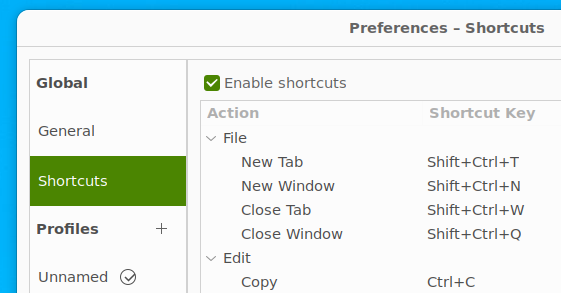

seems it takes 6x times longer to use collab_learner instead of directly embeddings
I need to understand why. I know why, it was just a mistake in calling collab_learner(dls, n_factors, y_range=y_range) (forgot y_range=)
Week 2 - January 23
Tuesday 01/09
I have continued my experimentations with collaborative filtering and embedding matrices. With nice results. I have played with parameters (y_range) and hyper parameters (wd). Will have to share with colleagues to get their feedback.
I have started to use collab_learner with NN. But I have to better understand what is behind.
Continue to listen to this lesson 8 (1:06). It is back to computer vision with convolution. I have less interest for these matters but I still like the way Jeremy uses Excel to illustrate all these concepts. Jeremy: the AI excel master.
Stephane Mallat will give his 2023 course at College de France in the following weeks.
image.png
I guess it will be a great time as always.
Tuesday 01/17
Ctrl-C in gnome-terminal
In Windows Terminal (and it seems OSX as well), Ctrl-C has 2 behaviours - if some text is highlighted, then it means COPY - if nothing is selected, then it is INTERRUPT
And I like this behaviour.
Unfortunately it is not the case with gnome terminal. But what I did was to update shortcut options to map Copy with Ctrl-C.

image.png
And automatically it remaps INTERRUPT with Ctrl-Shift-C.
Not as good as Windows Terminal but good enough for now.
for sublime-text, you can rename /var/lib/snapd/desktop/applications/sublime-text_subl.desktop to /var/lib/snapd/desktop/applications/sublime_text.desktop. Since the application reports “sublime_text” as their app_id, just rename its .desktop file to same as it’s app_id, thanks!
Those are entry level, but I am sure to learn thinks from it. And maybe detect why I have kernel dying when running stable diffusion inference from my WSL.